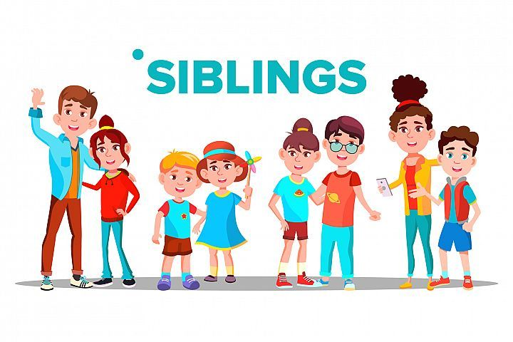
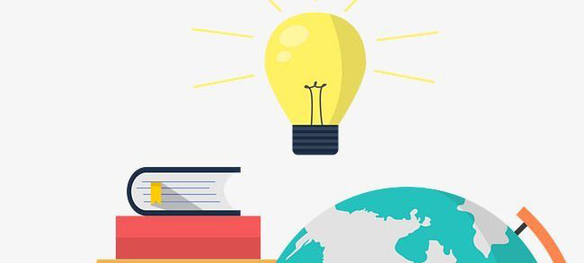

About

Saya adalah anak ke-2 dari 4 bersaudara. Keluarga kami bertotal 6 dengan anggota papa, mama, kakak perempuan, saya, adik perempuan, dan adik laki-laki. 4 tahun yang lalu kami beranggota 7 dengan nenek tetapi ia meninggal sehingga sekarang kami kekurangan seorang anggota keluarga.
menjadi anak kedua bukan lah hal yang mudah, harus bisa mengalah yang ebih kecil dan menuruti yang lebih tua. Walau begitu saya masih bisa menemukan banyak hal yang membuat saya bisa melewati hari-hari tanpa kelelahan. Seperti menonton anime, saya adalah seorang otaku sejak masih
sd karena terpengaruhi oleh kakak sepupu,dan genre kesukaan saya adalah bl. Selain otaku saya juga sangat suka kpop dan drama saya juga suka itu sejak sd karena sepupu saya. Dan ditambha dengan pesatnya internet sekarang saya lebih bisa menjelajahi banyak hal lagi seperti wester
film dan tv show, saya sangat menyukai nya apalagi film marvel yang setiap filmnya tidak akan membuat bosan untuk ditonton(kecual the incredible hulk). Saya juga sangat suka series thailand yang lebih mudah diakses untuk menonton. Masih banyak hal yang saya suka tetapi yang pasti
saya tidak suka olahraga.
Education

Saya sekarang berada dalam bangku smk 3 dengan jurusan RPL atau SE. saat ini saya sudah menempuh ilmu selama 11 tahun dan saya mulai dari tk atau kelas 6 di tk-sd Agape Kudus yang adalah sekolah cabang dari Bethel Dadap. Sekolah tk dan sd saya tidak terlalu besar dan pelajaran yang
diberikan tidak terlalu susah sehingga saya mampu mengikuti dengan mudah. tetapi saat masuk smp saya masuk ke smp-sma kasih kemuliaan disana pendidikan lebih tinggi dan saat kelas 7 saya tidak dapat mengikuti denga baik tetapi saat sudah kelas 8 saya mulai bisa menyusuaikan diri
dan untungnya saya lulus dengan nilai UN bahasa indonesia dan inggris yang tinggi yakni 91 dan matematika dan sains lebih rendah 65 dan 60. Walau saya ada kelemahan tetapi saya juga memiliki kelebihan dalam bidang studi. Saya memilih SMK karena ingin lebih mengenal bidang kerja dan
memilih RPL karena zaman sekarang adalah zaman dimana segala lowongan membutuhkan keahlian dalam teknologi.
Skill
Saya tidak memiliki kemampuan khusus, tetapi saya mampu berbicara inggris dan mandarin dengan lancar walau masih kurang dalam bidang membaca dan menulis. Saya juga lumayan ahli dalam membetulkan barang dirumah. Saya bisa dibilang juga google di rumah saya. Saya mampu tidur lebih dari
20 jam dalam sehari.